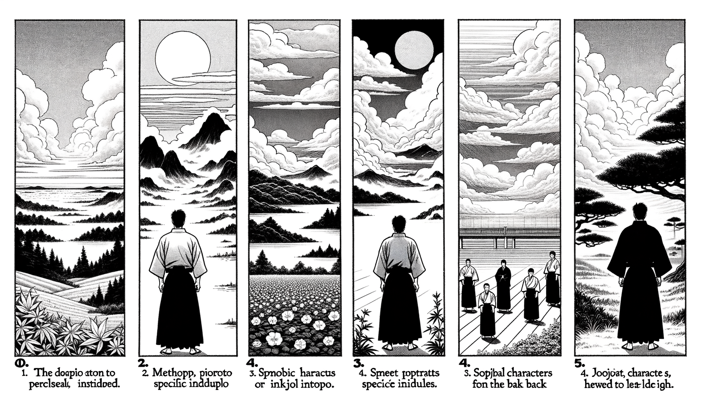

七十五巻 巻一覧
正法眼藏第28 禮拜得髓
本紹介ページの導入・語彙・深掘り・クイズは tools/regen_volume_intro_from_corpus.py が OpenAI API で生成したものです（入力は当巻の原文からの短い抜粋のみ）。内容はモデル出力のため、重要箇所は必ず原文・教本と照合してください。
出典: https://shomonji.or.jp/zazen/doc/genzou.html
原文・現代語訳の全文は 全文ページを参照してください。
この巻の紹介（導入）
修行阿耨多羅三藐三菩提の時節には、導師をうることもともかたし。その導師は、男女等の相にあらず、大丈夫なるべし、恁麼人なるべし。
すでに導師に相逢せんよりこのかたは、萬緣をなげすてて、寸陰をすごさず精進辨道すべし。
語彙の足場
- 阿耨多羅三藐三菩提：仏教における最高の悟りの境地を指し、完全な覚醒を意味する。
- 導師：修行者を指導する師匠のこと。精神的な指導を行う重要な存在である。
- 善知識：真理を知る者、または教えを伝える者のこと。修行において重要な役割を果たす。
- 因果：物事の原因と結果を表す概念。仏教では行為が未来に影響を与えるとされる。
- 法：仏教の教えや真理を指し、修行の指針となるものである。
原文（要点の抜粋）
当巻の冒頭付近からの短い抜粋です。長い引用は載せていません。 全文は全文ページを参照してください。出典はリポジトリ内 doc/正法眼蔵.txt です。原文の参照元: https://shomonji.or.jp/zazen/doc/genzou.html
修行阿耨多羅三藐三菩提の時節には、導師をうることもともかたし。その導師は、男女等の相にあらず、大丈夫なるべし、恁麼人なるべし。古今人にあらず、野狐精にして善知識ならん。これ得髓の面目なり、導利なるべし。不昧因果なり、儞我渠なるべし。
すでに導師に相逢せんよりこのかたは、萬緣をなげすてて、寸陰をすごさず精進辨道すべし。有心にても修行し、無心にても修行し、半心にても修行すべし。
しかあるを、頭燃をはらひ、翹足を學すべし。かくのごとくすれば、訕謗の魔黨にをかされず、斷臂得髓の祖、さらに他にあらず、脱落身心の師、すでに自なりき。
髓をうること、法をつたふること、必定して至誠により、信心によるなり。誠心ほかよりきたるあとなし、内よりいづる方なし。ただまさに法をおもくし、身をかろくするなり。世をのがれ、道をすみかとするなり。いささかも身をかへりみること法よりおもきには、法つたはれず、道うることなし。その法をおもくする志氣、ひとつにあらず。他の教訓をまたずといへども、しばらく一二を擧拈すべし。
いはく、法をおもくするは、たとひ露柱なりとも、たとひ燈籠なりとも、たとひ諸佛なりとも、たとひ野干なりとも、鬼神なりとも、男女なりとも、大法を保任し、吾髓を汝得せるあらば、身心を牀座にして、無量劫にも奉事するなり。身心はうることやすし、世界に稻麻竹葦のごとし、法はあふことまれなり。
釋迦牟尼佛のいはく、無上菩提を演説する師にあはんには、種姓を觀ずることなかれ、容顔をみることなかれ、非をきらふことなかれ、行をかんがふることなかれ。ただ般若を尊重するがゆゑに、日日に百千兩の金を食せしむべし、天食をおくりて供養すべし、天花を散じて供養すべし。日日三時、禮拜し恭敬して、さらに患惱の心を生ぜしむることなかれ。かくのごとくすれば、菩提の道、かならずところあり。われ發心よりこのかた、かくのごとく修行して、今日は阿耨多羅三藐三菩提をえたるなり。
しかあれば、若樹若石もとかましとねがひ、若田若里もとかましともとむべし。露柱に問取し、牆壁をしても參究すべし。むかし、野干を師として禮拜問法する天帝釋あり、大菩薩の稱つたはれり、依業の尊卑によらず。
しかあるに、不聞佛法の愚癡のたぐひおもはくは、われは大比丘なり、年少の得法を拜すべからず、われは久修練行なり、得法の晩學を拜すべからず、われは師號に署せり、師號なきを拜すべからず、われは法務司なり、得法の餘僧を拜すべからず、われは僧正司なり、得法の俗男俗女を拜すべからず、われは三賢十聖なり、得法せりとも、比丘尼等を禮拜すべからず、われは帝胤なり、得法なりとも、臣家相門を拜すべからずといふ。かくのごとくの癡人、いたづらに父國をはなれて他國の道路に跉跰するによりて、佛道を見聞せざるなり。
むかし、唐朝趙州眞際大師、こころをおこして發足行脚せしちなみにいふ、たとひ七歳なりとも、われよりも勝ならば、われ、かれにとふべし。たとひ百歳なりとも、われよりも劣ならば、われ、かれををしふべし。
七歳に問法せんとき、老漢禮拜すべきなり。奇夷の志氣なり、古佛の心術なり。得道得法の比丘尼出世せるとき、求法參學の比丘僧、その會に投じて禮拜問法するは、參學勝躅なり。たとへば、渇に飮にあふがごとくなるべし。
震旦國の志閑禪師は臨濟下の尊宿なり。臨濟ちなみに師のきたるをみて、とりとどむるに、師いはく、領也。
臨濟はなちていはく、旦放儞一頓。
図解（4コマ・AI生成）
教義の根拠は原文・出典に従い、漫画は比喩の補助に留めてください。

深掘り（読解の手掛かり）
- 導師は性別に関わらず、真の理解を持つ者であるべきである。
- 修行においては、心の状態に関わらず努力が求められる。
- 法を重んじることが、修行の成果に直結する。
- 他者を尊重し、教えを求める姿勢が重要である。
確認（形成評価）
各設問の下の「採点」で正誤を表示します（ブラウザ内のみ。ログは送りません）。